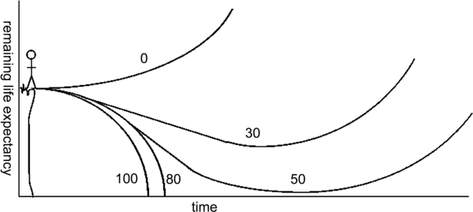

The Rise of Life Extension
 28th December 2013 |
28th December 2013 |  Comments
Comments
Just since 2010 there has been an upsurge in the popularity of life extension technologies. Opposing the "wrinkle removing" substances that claimed to use natural herbs to "reverse the aging process", there have been new groups arising that have instead actually been researching the healthy extension of life, with the goal of eventually suspending and even reversing the biological aging process of humans. New groups, such as the Strategies for Engineered Negligible Senescence (SENS) have been at the forefront of advocating for aging to be considered as a disease.
Such a change would have powerful implications; treating aging like a disease would move any drugs relating to its treatment into a whole new area of study. The Chief Science Officer at SENS, Dr. Aubrey de Grey, has spent a large amount of time showing the world his idea for a roadmap to end aging. He has an idea of Longevity Escape Velocity, which he uses as the evidence to support his hypothesis that the first 1000-year-old has already been born.

Essentially what it means is that, the older you get, the less likely you are to survive getting the required treatments to reverse the damage done to you through aging. So he states that, if you are 80 when you begin to get treatments, it's unlikely that you'll make it through the treatments. However, if you're 50, you may just have enough time left to escape death. What he means by escape velocity is that, once we reach the rate of extending life expectancy by one year per year, then we can only expect to go up from there. If you're 50, add another year to your life, while during that additional year, they add technologies to extend your life another 1.1 years, and simply continue that trend until aging is eliminated.
So what does this mean for us? Hopefully, life extension technologies will be developed quickly enough to give as many people as possible the opportunity to live however long they want. How long will this take? Well, first all of the related research needs to be done, and there needs to be breakthroughs to spark the funding required to get these technologies off the ground. What will it take? Here's Aubrey de Grey's TED Talk from a few years back talking about his roadmap to end aging:
An unexpected entry in the life-extension game has been Google. Recently, they released an announcement of their new group dubbed, Calico. The organization will primarily be working on research relating to aging, but eventually has the stated goal of reducing or even reversing the aging process. Previously, Google promised life extension to it's employees as a perk, and they are now actually beginning to do the research to institute that.
There's good reason that you should be excited for Google entering the game too. Their financial support and research will go a long way in advancing the field. Google doesn't enter science and technology lightly, and they're often successful. If this program is able to pull of the level of success seen by programs like their driverless car, then you should really start to get excited.
However, in order to get the public's support advances in life extension need to be proven successfully in test subjects such as mice. Once the public's interest is sparked, then things will really start to take off, and we'll have the technology required to begin treating the disease of aging.
Luckily, there have been recent advances in reducing and even reversing the aging in mice. This research obviously has a long way to go before it becomes applicable to humans, but the premise is enough to get excited over. Some of the results have actually been quite dramatic; Harvard researchers were able to reverse aging signs in a 2-year-old mouse to that of a 6-month-old one. If we want to make comparisons, that's the equivalent of 60-year-old human feeling 20 again. They did this by increasing the levels of NAD in the tissues of the mice, which can be reduced by up to 50% as mammals age. Clinical trials must first be tested before there can be any hope of the applicability in humans, but this proves the concept that aging is not a permanent ailment. It can be cured.
Additionally, mice were given the youthful ability to heal quickly by enhancing cell metabolism. By reactivating the Lin28a gene, mice were able to regrow some of the soft tissue, hair, and bone. Perhaps this can help adults regenerate from injuries faster, and allow for rejuvenation from old injuries.
Will we live forever? Based on current trends, if you're in your 30's or younger, then you really have some reason to get excited. We don't know exactly when this technology will emerge, but the amount of interest that has recently been demonstrated in this area is really exciting. The best part is, it's only likely to continue.